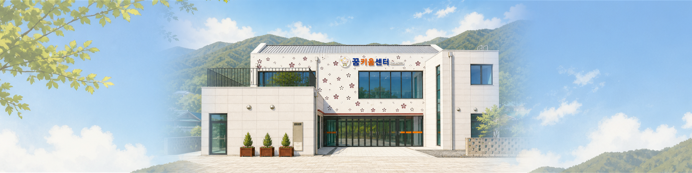

Greeting
군북의 삶 가까이에서
오래 머물 수 있는 거점을 만들어가겠습니다.
군북면 꿈키움센터는 마을의 시간과 주민의 가능성이 자연스럽게 만나는 생활문화 거점입니다. 흩어진 마을의 생활권을 잇고, 누구나 배움과 돌봄, 모임과 나눔을 일상 가까이에서 경험할 수 있도록 준비되었습니다.
센터의 역할은 공간을 여는 데서 끝나지 않습니다. 주민이 직접 배우고 참여하며, 그 경험이 다시 마을의 이야기와 공동체 활동으로 환원되는 선순환을 만드는 데 있습니다.
군북의 사람, 공간, 계절의 농산물과 마을 이야기가 서로의 곁을 밝히는 곳. 꿈키움센터가 군북면의 오늘을 단단히 잇고 내일의 꿈을 함께 키우겠습니다.
군북면 꿈키움센터